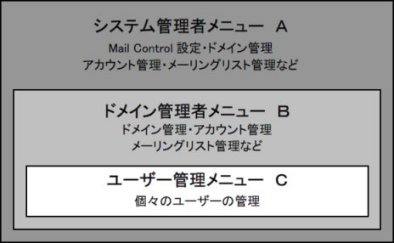
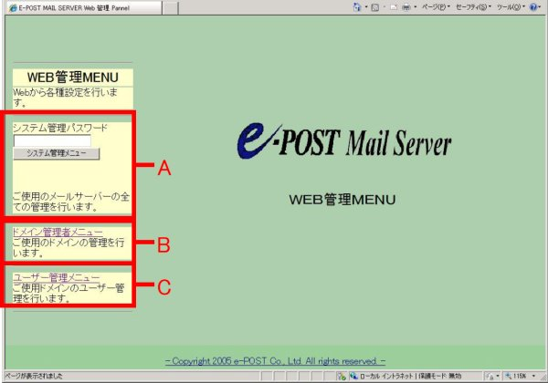
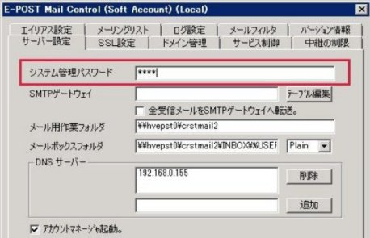
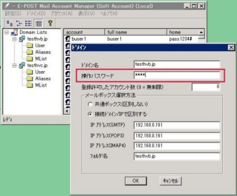

Web管理ツールの構成メニューと操作パスワードについて
Web管理ツールの構成メニューと操作パスワードの関係は次のようになっています。
Web管理ツールの既定画面では、フレームで構成されており、左フレームに大きく３つに分かれたメニューが表示されます。これらの３つのメニューは、図のような階層的な権限での管理ができるようにそれぞれ構成されています。

・システム管理者メニュー …Ａ
・ドメイン管理者メニュー …Ｂ
・ユーザー管理メニュー …Ｃ

このままの表示にしておいた場合、個々のユーザーがメールサーバ全体の設定やドメイン全体の設定を変更しては困りますので、システム管理パスワード（操作パスワード）とドメイン操作パスワードを設定しておきます。
Ａ．システム管理パスワードを設定する
システム管理メニューを操作するための、「Ａ」のシステム管理パスワードを設定するには、Mail Control 画面から設定します。
「サーバー設定」タブの「システム管理パスワード」を入力し、「適用」ボタンをクリックした後、Mail Control 画面を閉じます。

設定されたこのパスワードが、Web管理ツール「システム管理者メニュー」を操作するときの「システム管理パスワード」となります。
Ｂ．ドメイン操作パスワードを設定する
ドメイン管理者メニューを操作するための、「Ｂ」のドメイン操作パスワードを設定するには、Account Manager（またはMail Control）のドメイン詳細設定画面から設定します。
Account Manager から作成済みドメイン名を選択して、ダブルクリックするか、右クリックメニューから「ドメインの変更」を選択します。表示されたダイアログボックスの「操作パスワード」を入力、「OK」ボタンをクリックして、Account Manager も閉じます。

設定されたこのパスワードが、Web管理ツール「ドメイン管理者メニュー」を操作するときのドメインを選択するときに促される「操作パスワード」となります。